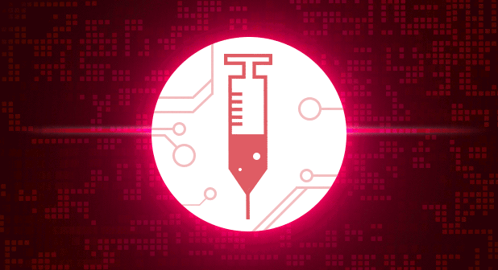

Imunização Ativa
A imunização ativa é quando o próprio sistema imunológico responde ao entrar em contato com uma substancia estranha no organismo, produzindo anticorpos e
células imunes para proteger o organismo de alguma ameaça. É o tipo de imunização que dura por vários anos e muitas vezes dura pela vida toda.
Existem dois meios de se adquirir imunidade a uma doença, ou quando se contrai a doença ou através da vacinação direta. Por exemplo, quando temos caxumba uma
vez não teremos mais, pois nosso corpo já criou anticorpos para destruir o agente causador da caxumba.
E através da vacina, é quando não foi preciso adquirir a doença e a criança recebeu a vacina como tipo de prevenção.
Imunização Passiva
Essa imunização é o tipo de imunização que é adquirida através da transferência à criança de anticorpos produzidos por um animal ou por um homem.
É o tipo de imunidade que produz uma rápida proteção ao indivíduo e que é temporária, durando algumas semanas ou meses. É o tipo de imunização mais
comum e que se caracteriza pela passagem de anticorpos da mãe para o feto via placenta. Transferência essa que ocorre nos últimos 2 meses de gestação,
para garantir uma boa imunidade à criança.
A imunidade passiva artificial pode ser adquirida sob três formas principais: através da imunoglobulina humana combinada, a
imunoglobulina humana hiperimune e o soro heterólogo.
A transfusão de sangue é uma outra forma de se adquirir imunidade passiva, já que, virtualmente, todos os tipos de produtos sanguíneos que contêm anticorpos.
Independente do tipo de imunização, é preciso que haja para que o organismo possa se proteger de alguma forma das ameaças de vírus e outros agentes que causam doenças.
As vacinas contêm antígenos inativados ou atenuados, que atuam estimulando o corpo a produzir uma resposta imune específica, de acordo com o agente invasor.
São microorganismos ( vírus ou bactérias) “bem fraquinhos” que não causam a doença, mas têm o poder de criar uma memória imunológica no nosso corpo, de maneira
que quando formos expostos a um microorganismo ativo, o organismo “saiba o que fazer.”
Já o soro são substâncias que contém anticorpos prontos para combater uma doença, toxinas ou venenos (de cobra, por exemplo). Ele é utilizado em casos em que o
organismo não conseguiria produzir anticorpos específicos a tempo de combater o agente invasor. Eles atuam como medidas curativas, o que é considerado imunização
passiva. É como se injetássemos no corpo do paciente “soldados” já preparados para o combate.